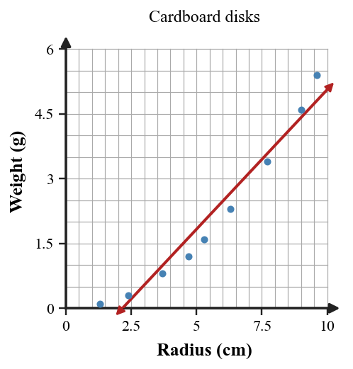

Start with what you can solve independently. Then find different classmates to compare reasoning or help with problems you have not completed. Record your own work and have each partner initial one problem they discussed with you.
Define extrapolation in a modeling situation.
A residual is positive. State whether the model overpredicted or underpredicted the actual value.
Use $h(t)=-16t^2+48t+5$ to predict the height at $t=2$ seconds. Then state one domain limit for the model.
Compare the table and scatterplot. Which representation better reveals whether the association is curved? Justify your answer with evidence from both.
| Radius | $1.3$ | $2.4$ | $3.7$ | $5.3$ | $7.7$ | $9.6$ |
|---|---|---|---|---|---|---|
| Weight | $0.1$ | $0.3$ | $0.8$ | $1.6$ | $3.4$ | $5.4$ |

Which method fits $x^2+6x+2=0$ best if exact answers are required?
Which method fits $3x^2+10x+8=0$ best?
Solve or interpret the quadratic situation for Choosing and Defending Solution Methods. Show the algebra that supports your answer.
Solve $4x^2-25=0$ using structure, not the full formula.
Solve or interpret the quadratic situation for Quadratic Modeling and Optimization. Show the algebra that supports your answer.
A ball has height $h(t)=-16t^2+40t+6$. Find when it hits the ground.
Solve or interpret the quadratic situation for Quadratic Modeling and Optimization. Show the algebra that supports your answer.
For $A(x)=x(24-2x)$, find the dimensions that maximize area.
Cross-Representation Comparison. Analyze the quadratic evidence for Solving Quadratics by Factoring. Write a conclusion and justify it with algebraic or graphical evidence.
Use the provided graph and the equation $y=(x-1)(x-6)$ to decide whether the same quadratic is represented. Explain at least two matching or conflicting features.

Mismatch. Analyze the quadratic evidence for Completing the Square. Write a conclusion and justify it with algebraic or graphical evidence.
The equation and table are supposed to match. Find the first incorrect table value and revise it.
| $x$ | 0 | 1 | 2 | 3 |
|---|---|---|---|---|
| $x^2+2x+1$ | 1 | 4 | 8 | 16 |
Recommend Between Two Approaches. Create or revise a quadratic task for Quadratic Formula using the constraints below.
- Include at least two representations among equation, table, graph, or context.
- Make the solution method visible from structure, not from a hint.
- Interpret the solution in words.
Student A uses factoring on $x^2-4x-1=0$. Student B uses the quadratic formula. Recommend one approach, solve exactly, and defend the choice using the equation's structure.
Identify whether each description gives enough information to write a unique model $y=ab^x$.
- Initial value 12 and multiplier 3.
- The output gets bigger each step.
- The first two outputs are 8 and 20 at x-values 0 and 1.
- The graph is curved upward.
Find the missing multiplier from consecutive outputs.
| Model | 0 | 1 | 2 | Multiplier |
|---|---|---|---|---|
| A | 9 | 27 | 81 | |
| B | 64 | 16 | 4 | |
| C | 10 | 12 | 14.4 |
A ball is dropped from 160 cm and rebounds to 120 cm after the first bounce. Assume the rebound height is multiplied by the same factor after each bounce.
- Write a rule for the height after n bounces.
- Predict the height after 4 bounces.
Compare the table and context to choose the best family.
| Week | 0 | 1 | 2 | 3 | 4 |
|---|---|---|---|---|---|
| Members | 20 | 30 | 45 | 67.5 | 101.25 |
Context: The club grows by half of its current size each week.
Use both representations to support a family choice.